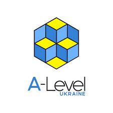

- First
Second
Third
- Fourth
- Fifth
- 
-
First line
Second line
15січ. 2020
Що таке верстка
Верстка по праву вважається одним із найважливіших етапів створення сайту. Відякості роботи та підготовки, знань спеціаліста залежить вся робота, якість сайту, його вид
та функціонування. Навіть незначна помилка, допущена у процесі верстки, може
призвести до катастрофічних наслідків.
Неправильний код може дати серйозне навантаження на сайт, неправильно відобразити
компоненти, внаслідок чого:
- відвідуваність сайту впаде
- прибуток клієнта буде прагнути до нуля.
- First
- Second
- Third
- Link
- Fifth